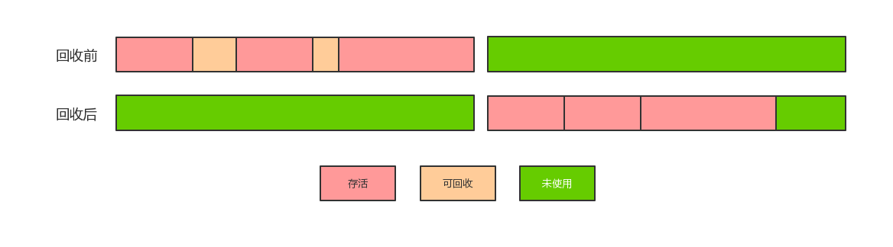
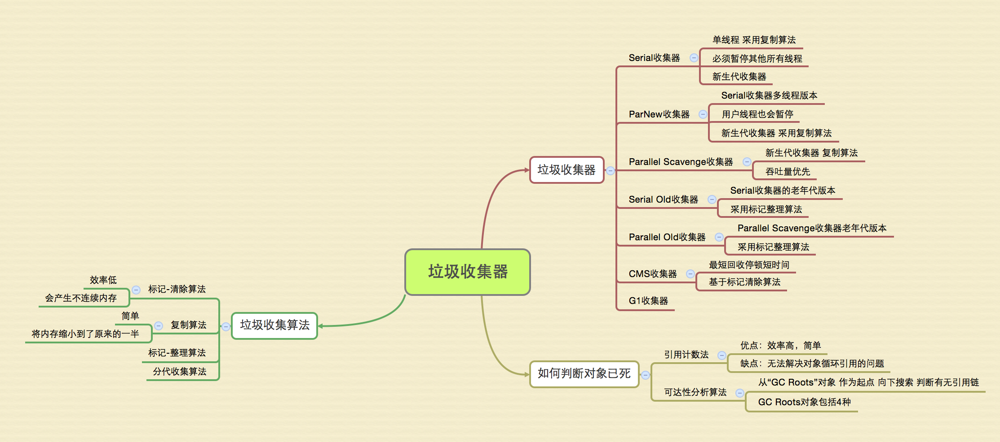

常见问题
- 如何判断对象已经死亡（两种方法）
- Java 四种引用类型 ～ 强引用，软引用，弱引用，虚引用（虚引用与软引用和弱引用的区别，使用软引用的好处）
- 如何判断一个常量是废弃常量
- 如何判断一个类是无用的类
- 垃圾收集有哪些算法，各自的特点
- 常见的垃圾回收器有哪些？
- CMS，G1收集器的介绍
- Minor GC 和 Full GC 的区别
Java 堆空间的基本结构

上图的 Eden 区和 Survivor From 区、Survivor To 区都属于新生代，Tentired 区属于老年代，在大部分情况，对象首先会在 Eden 区域分配，在第一次新生代垃圾回收（Minor GC）后，如果对象还存活，则该对象会进入 Survivor To 区，并且年龄会加1（第一次从 Eden 到 Survivor 区时年龄是1），当年龄到达一定程度时（默认为 15 岁，但是不一定必须到达 15 岁才会进入老年代区），对象会被晋升到老年代中，对象晋升到老年代的年龄阀值，可以通过设置参数 -XX:MaxTenuringThreshold 来控制。经过这次 GC 之后，Eden 区 和 From 区已经被清空，这时候，From 和 To 会交换他们的角色，也就是说此时新的 Survivor To 区就是 GC 之前的 Survivor From 区，新的 Survivor From 区就是 GC 之前的 Survivor To 区。Minor GC 会一直重复这个过程，直到 Survivor To 区被填满，To 区被填满之后，会将所有对象移动到老年代中。
堆内存常见的分配策略：
- 对象优先分配在 Eden 区
- 大对象直接进入老年代
- 长期存活的对象将进入老年代
Java 垃圾收集算法
标记 - 清除算法
该算法首先标记出需要回收的对象，在标记完成后统一回收所有被标记的对象。该算法是垃圾回收最基础的算法，后续的算法都是对其不足进行改进得到的。它会带来两个很明显的问题：
- 效率问题
- 空间浪费问题（标记清除后会产生大量不连续的碎片，导致大量空间无法使用）

复制算法
将堆内存分为大小相同的两块，每次只使用一块。这块内存使用完后，将还存活的对象复制到另一块内存中，然后把使用的空间一次全部清理，这样每次回收都只对内存的一半进行回收。
这样也会有一定的问题，就好比我们买了200平的房子，却只能使用100平，这就造成了使用空间的缩小。

标记 - 整理算法
针对老年代特点特出的一种标记算法，过程与“标记 - 清除”算法一样，但是标记之后不是直接对可回收对象进行回收，而是让所有存活对象向一端移动，然后清理掉存活对象端边界以外的内存。

分代收集算法
问题：HotSpot 为什么要分为新生代和老年代？
根据对象存活周期的不同将内存分为几块（一般将 Java 堆分为新生代和老年代），这样就可以根据各年代的特点来选择合适的垃圾收集算法。
比如在新生代中，每次垃圾收集都会有大量的对象死去，所以我们可以选择复制算法，只需要付出少量对象的复制成本则可以完成每次垃圾收集。而老年代中对象的存活几率都是比较高的，而且没有额外的空间对它进行分配担保，所以我们必须选择 “标记 - 清除” 或者 “标记 - 整理” 算法进行垃圾收集。
垃圾收集器
图片来源：读书笔记—深入理解Java虚拟机1

新生代串行收集器 - Serial
串行收集器主要有两个特点：1、使用单线程进行垃圾回收；2、独占式的垃圾回收。
在串行收集器进行垃圾回收时，Java 应用程序中的线程都需要暂停，等待垃圾回收完成，这样就会造成较差的用户体验。但是串行收集器仍然是一个成熟的、经过长时间生产环境考验的极为高效的收集器。
新生代串行收集器采用复制算法，实现相对简单，并且没有线程切换的开销。在 HotSpot 虚拟机中，使用 -XX:+UseSerialGC 参数可以指定新生代串行收集器和老年代串行收集器。当 JVM 在 Client 模式下运行时，默认使用新生代串行收集器。一次新生代串行收集器的工作输出日志类似于下（使用 -XX:PrintGCDetails 开关）：
1 | [GC [DefNew: 3468K->150K(9216K), 0.0028638 secs][Tenured: |
它显示了垃圾回收之前新生代的占用内存和垃圾回收后的占用内存，以及垃圾回收的时间。
新生代并行收集器 - ParNew
它是新生代串行收集器的多线程版本，垃圾回收时也会暂停 Java 应用程序的线程。它除了使用多线程处理垃圾回收外，其他的功能与 Serial 收集器一样。在单 CPU 的环境下，ParNew 收集器的表现不会比 Serial 更优秀。
Parallel Scavenge 收集器
Parallel Scavenge 收集器也是使用复制算法的多线程垃圾收集器，它看上去几乎和 ParNer 一模一样。但是 Parallel Scavenge 收集器的关注点是吞吐量（高效率的利用 CPU），吞吐量就是 CPU 中用于运行用户代码的时间与 CPU 总消耗时间的比值。而 CMS 等垃圾收集器关注的更多的是用户线程的停顿时间，提高用户体验。Parallel Scavenge 收集器提供了很多参数供用户找到最适合的停顿时间或最大的吞吐量。
1 | -XX:UseParallelGC // 使用 Parrallel 收集器（新生代），老年代使用串行收集器 |
此收集器中，新生代采用复制算法，老年代采用“标记-整理”算法
老年代串行收集器 - Serial Old
老年代串行收集器是 Serial 收集器的老年代版本，同样是单线程，但是它使用标记-整理算法。他也是一个串行的、独占式的垃圾回收器。由于老年代垃圾回收通常会使用比新生代垃圾回收更长的时间，因此，在堆空间较大的应用程序中，一旦老年代串行收集器启动，应用程序很可能会因此停顿几秒甚至更长时间。但是Serial Old 收集器可以和多种新生代收集器配合使用，而且可以作为 CMS 收集器的备用收集器。可以通过参数 -XX:+UseSerialGC 将新生代和老年代都使用串行收集器，使用 -XX:UseParallelGC 设置新生代和老年代都使用并行收集器。
Parallel Old 收集器
Parallel Scavenge 收集器的老年代版本。该收集器采用”标记-整理“算法。注重吞吐量以及 CPU 资源的场合，都可以优先考虑 Parallel Scavenge 和 Parallel Old 收集器。